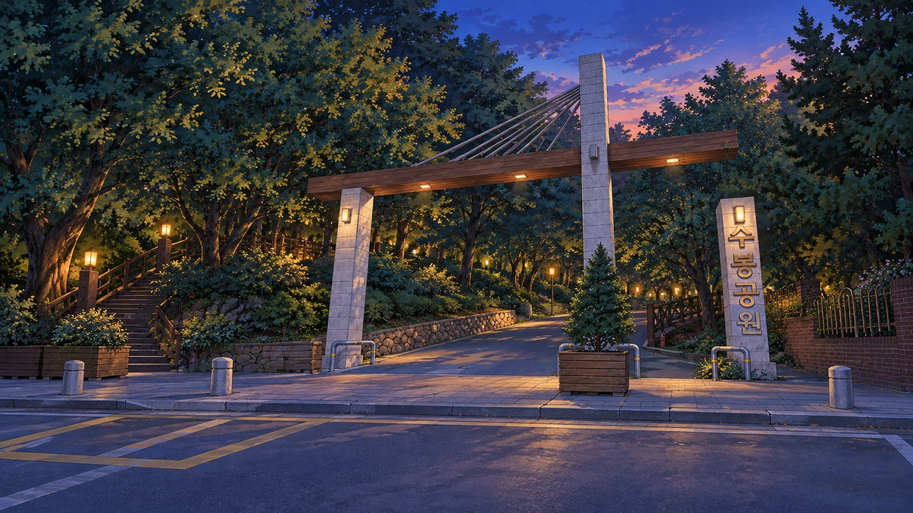
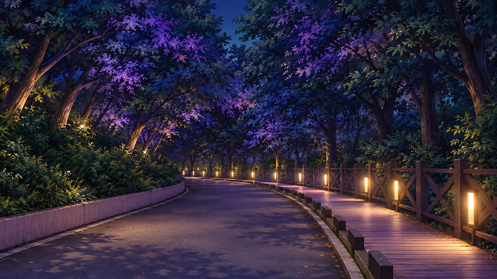
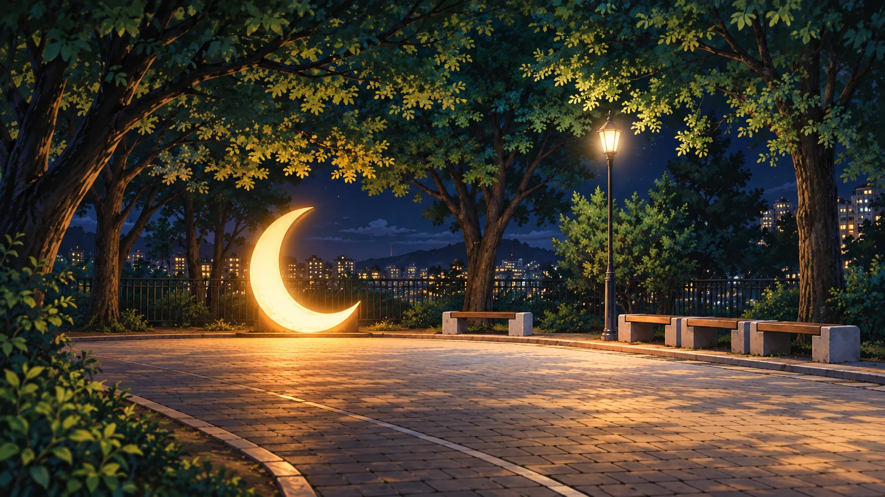
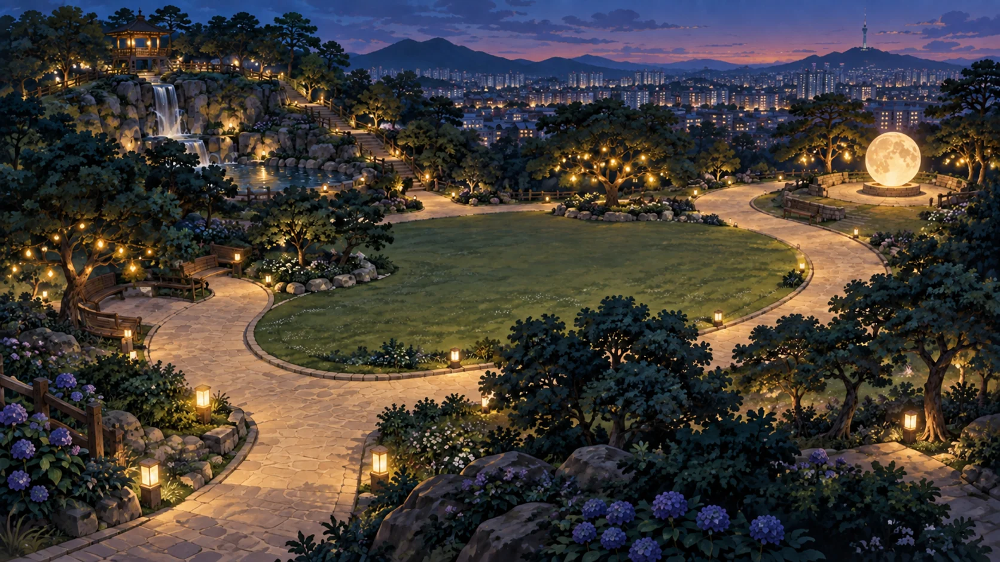

문학산에서 내려와, 오늘의 마지막 정류장
이번 정류장은
수봉공원입니다.
해가 진 도시, 아직 잠들어 있는 별빛.
민우와 서연의 밤 산책이 시작됩니다.

문학산에서 내려와, 오늘의 마지막 정류장
해가 진 도시, 아직 잠들어 있는 별빛.
민우와 서연의 밤 산책이 시작됩니다.
 실제 입구를 참고한 창작 일러스트 · 매스투어 이야기
실제 입구를 참고한 창작 일러스트 · 매스투어 이야기

 실제 장소를 참고한 창작 일러스트
실제 장소를 참고한 창작 일러스트
TRAVEL NOTE · 수봉공원

첫 번째 체험 · 별빛 탐지기
그림을 누르거나 손가락으로 훑으며
숨어 있는 두 빛 A · B를 찾아주세요.
빛에 가까워질수록 탐색 정확도가 높아지고 소리가 커져요.
소리를 끄더라도 숫자와 신호 막대로 찾을 수 있어요.
“신호가 약해지면 다른 쪽으로 움직여 보자.
어렵다면 찾기 도움을 눌러도 돼!”
CHAPTER 03 · 별빛을 품고 돌아가는 길
민우와 서연이 매스투어 버스에 오릅니다.

CHAPTER 03 COMPLETE · 수봉공원
신호를 따라 두 빛을 찾고,
원주각으로 모아 공원의 밤을 밝혔어요.
수봉별마루의 야경과 오늘 찾은 수학의 빛을
여행 수첩에 담았습니다.

SUBONG BYEOLMARU · NIGHT EXPLORER
희미한 두 빛을 찾아 한곳에 모아요.
원주각의 비밀로 수봉별마루를 밝혀 주세요.
학생 원안의 탐지기 탐색과 원주각 문제를 바탕으로 만들었어요.
01 · 학생 원안의 빛 탐지기
그림을 누르거나 훑어보세요. 가까워질수록 신호음과 탐색 정확도가 함께 높아져요.
같은 호 AB를 바라볼 때
02 · 원주각으로 두 빛을 한곳에
푸른색으로 표시한 길을 누르거나 장치 P를 끌어 옮겨요.
수학 체험을 위해 공원 속 잔디밭과 길을 원형으로 구성한 창작 그림입니다.
수학의 빛을 되찾았어요
60° ÷ 2 = 30°
SUBONG BYEOLMARU · LIGHT RESTORED
탐색으로 찾고, 원주각으로 모았어요.
수봉공원에 수학의 빛이 돌아왔습니다.
이 브라우저에서 기록을 저장할 수 없어요. 창을 닫기 전까지 여행을 계속할 수 있습니다.